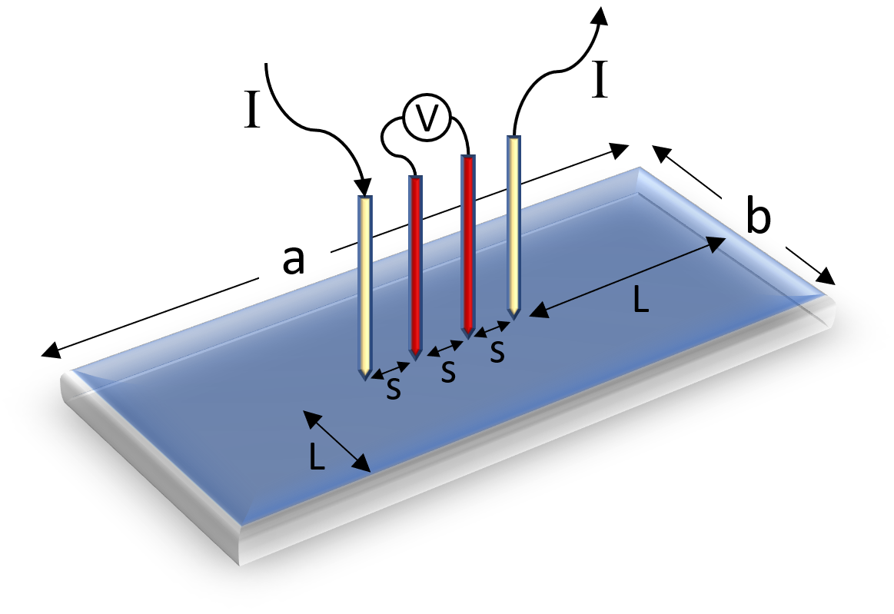
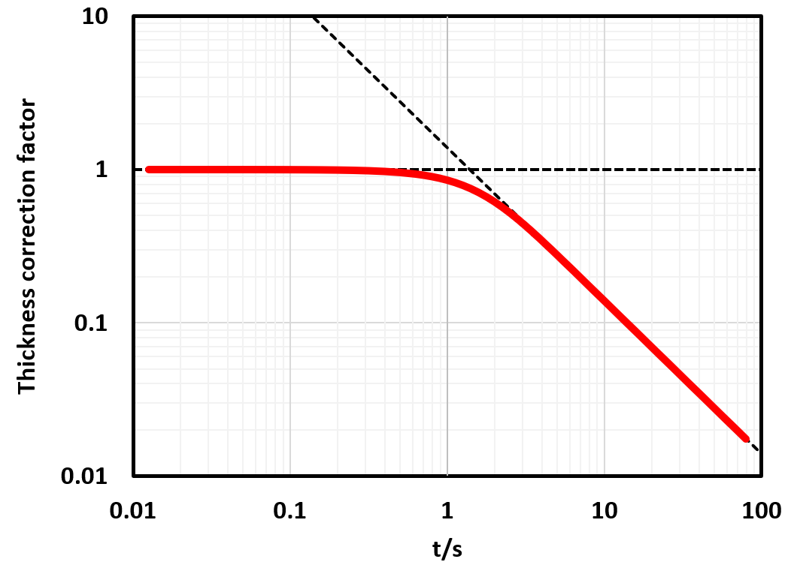

4-point resistivity¶
Take note that only the ratio of the rectangle \(a/b\) and the ratio of the short edge with the probe distance \(b/s\) influence the correction factor. \(L\) is shortest distance from the probes to both edges.
Scientific Introduction¶

In a 4-point resistivity test, a current is forced through a thin film through the 2 outer probes. The voltage is measured between the inner set of probes. This 4-wire setup elimites contact resistance.
The sheet resistance is calculated as $$ R_s = \frac{\pi}{\ln(2)} \frac{V}{I} $$ This relation is only valid if the thickness is much less than the probe distance and the size is large enough \cite{miccoli_100th_2015}. If this is not the case, a correction factor must be applied. Applying a current near an edge or having a small thickness compared to the probe distance limits the number of available current paths, thus affecting the measured resistivity. To account for this, \(F\) includes factors concerning both thickness and edge effects. The general formula for \(F\) is given as: $$ F=F_1F_2F_3 $$
With
- The thickness of the device (\(F_1\)),
- The edge effects near the probe location on the sample (\(F_2\))
- The geometry of the sample (\(F_3\)).
Calculating F¶
Thickness correction¶
\(F_1\) takes into account the thickness of the sample. Thin layers, for example, restrict the paths the electrons can take when measuring thus affecting the measured resistance. To correct this effect Albers and Berkowitz \cite{albers_alternative_1985} derived the following formula:

For small thickness the correction factor is 1, as it should be, since equation was derived from a 2D material. This approximation holds as long as \(t/s<0.2\). As the thickness increases, when \(t/s >> 1\), \(F_1 = 2\ln2(s/t)\). When substituting this relation into equation it correctly reduces to the 3D case.
Edge correction¶
Note that the previous equation was derived when the probes are placed far away from the edge of the sample. Edge effects start to play a significant role when measuring in close proximity to the device edge, as it again reduces the number of available current paths. Therefore, one more term is added to \(F\) to correct for this effect: \(F_2\). This factor differs depending on the shape and, for rectangular shapes, whether the probes are aligned parallel or perpendicular to the edge.
Rectangular Substrate¶
For devices with straight edges the edge correction term is \cite{topsoe_geometric_1966}:
Where L is the distance from the edge to the closest probe. It shows that the edge effects are fairly insignificant (\(<1\%\)) when \(L/s>5\). However, care must be taken when \(L\) is in the same order as \(s\) as the error in resistivity measurements will already be more than 15\%.
Correction factor table for rectangular devices¶
| \(b/s\) | \(a/b = 1\) | \(a/b = 2\) | \(a/b = 3\) | \(a/b \geq 4\) |
|---|---|---|---|---|
| 1 | 0.220 | 0.221 | ||
| 1.25 | 0.275 | 0.275 | ||
| 1.5 | 0.326 | 0.329 | 0.329 | |
| 1.75 | 0.379 | 0.380 | 0.380 | |
| 2 | 0.429 | 0.430 | 0.430 | |
| 2.5 | 0.519 | 0.519 | 0.519 | |
| 3 | 0.542 | 0.596 | 0.596 | 0.596 |
| 4 | 0.687 | 0.712 | 0.712 | 0.712 |
| 5 | 0.774 | 0.789 | 0.789 | 0.789 |
| 7.5 | 0.885 | 0.891 | 0.891 | 0.891 |
| 10 | 0.931 | 0.935 | 0.935 | 0.935 |
| 15 | 0.968 | 0.970 | 0.970 | 0.970 |
| 20 | 0.982 | 0.983 | 0.983 | 0.983 |
| 40 | 0.996 | 0.996 | 0.996 | 0.996 |
| \(\infty\) | 1 | 1 | 1 | 1 |
In practice, of course, devices are not infinite in all directions. When measuring rectangular devices, especially when the short side \(b\) is less than 10 times \(s\), shape effects start to be significant. These effects are corrected by the \(F_3\) term. Because there are other effects than just the straight edges, no analytical solution exists for rectangular shapes. Instead, the table above should be consulted. For devices that do not have the exact dimensions displayed in the table, interpolation should be used to extract the proper correction factor.
Circular Substrate¶
In contrast to rectangular devices, circular devices are much more symmetrical and analytical solutions exist. Smits \cite{smits_measurement_1958} calculated the correction factor for circular samples when measured at the center (off-center measurements require additional corrections) as: